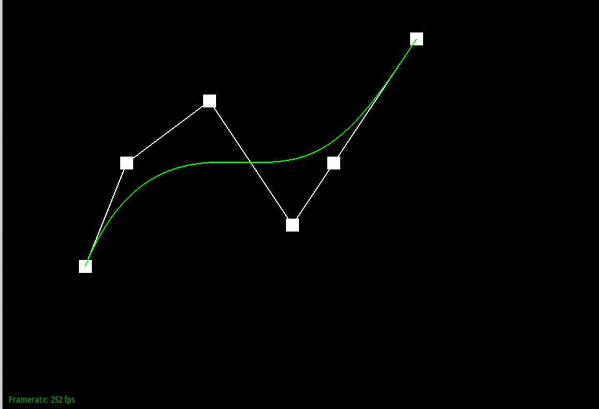
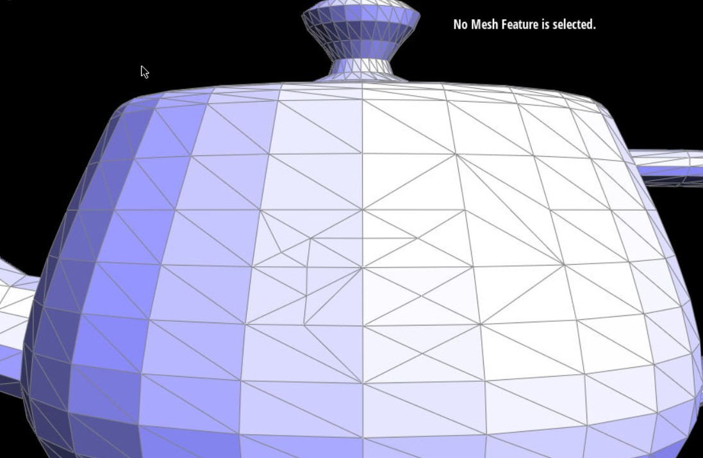

Overview
This is a class project of CS 184 Computer Graphics at UC Berkeley. In this project, we implement algorithms to evaluate, render and manimulate Bezier Curves and Surfaces. We also implement some common edit operations on polygon mesh such as edge flip, split and loop subdivision
Section I: Bezier Curves and surfaces
Part 1: Bezier Curves
De Casteljau is an iterative algorithm which evaluate a bezier curves parametrized by t, formally, given n possible control points \(p_1,p_2,..p_n\), one step De Casteljau output n-1 intermediate points \(p'_1,p'_2,..p'_{n-1}\) defined by
$$ p'_i = (1-t)p_i+t(p_{i+1})$$A full evaluation of the curve is achieved by iteratively applying De Casteljau steps until there is only one point left. In practice, we create a new vector of 2D positions in each iteration and push calculated new points into it.
We provide visualzation of different levels of evaluation
|

|
|
|
|
|
|
|
We also show a version of the image with control point and t moved
Part 2: Bezier Surfaces
De Casteljau can be applied to a grid nxn of points to generate 2d surfaces. A surface parameterized by (u,v) can be evaluated as follows
We show an illustration of evaluated surfaces
In practice, our implementation follows the above step literally. We first evalaute each row at u, then push the results to a new vector of 2d positions and use it to evaluate the second curve at v using functions implemented in part 1
Section II: Polygon Mesh Edits
Part 3: Area-weighted vertex normals
Directly rendering a mesh according to surface noraml can cause observable edges alongside the border of each polygon. To render a smooth transition, we calcuate the normal at each vertex and use them to interploate normals at each point on the surface
Formally, given a vertex \( v \) and set of neighboring triangles \( S\), the area-weighted normal at \(v\) is
$$\frac{\sum_{s\in S} a_s N_s }{\lVert \sum_{s\in S} a_s N_s \rVert} $$Where \(s\) are triangles, \(a_s\) is the area and \(N_s\) is the unit normal vector. In practice, we can get \(2 a_s N_s \) by computing the cross product of two edge vectors of a triangle. We add all the cross product together and normalize it, this gives us the desired result. The factor of two does not matter because it is applied on all triangles and will be normalized in the last step.
We show the visual results of area-weighted normals as follows
| Before | After |
Part 4: Edge Flip
Edge flip is defined by the following diagram. (source: 184 website)
Given an edge, we first find all points, edges and surfaces in the diagram using the half-edge data structure, then we reassign all pointers so that the new structure reflects desired outputs. In particular, we map BC to AD, the left surface to the top surface, the right surface to the bottom surface. For each vertex, edge, and face, we reset the haledge pointer. For each half edge, we reset the its next, twin, vertex, edge, and face pointer. We ignore the boundary edges. We did not encounter and bugs during the implementation.
We show the visual results of as follows

|
|
| Before | After |
Part 5: Edge Split
Edge split is defined by the following diagram. (source: 184 website)
Given an edge, we first find all points, edges and surfaces in the diagram using the half-edge data structure. We then create a new point, 2 new faces and 3 new edges, and 6 new halfedges. The position of the new point is the numerical mean of point B and C. We map BC to NC and the left, right surfaces to left-top, right-top ones. Then we assign (reassign for existing elements) all pointers so that the new structure reflects desired outputs. In particular, for each vertex, edge, and face, we reset the haledge pointer. For each half edge, we reset the its next, twin, vertex, edge, and face pointer. We ignore the boundary edges. We did not encounter and bugs during the implementation. We only create elements when necessary and all orginal elements are reassigned, so we do not create "isolated", unused elements.
We show the visual results of as follows

|
 | |
| Before | After Some Edge Split | After Some Edge Split and Flip |
Part 6: Loop Subdivision
Loop subdivison is an upsampling method for geometric meshes. It first perform 1-4 split for each triangle and move new points to desired location. The new location is defined as follows.
where \(\alpha \) is the original position of the old vertex, and and \(\beta\) is the sum of all original positions of the neighboring vertices. \(n\) is the degree of the vertex and \(u\) is \(\frac{3}{16}\) if \(n=3\) and \(\frac{3}{8n}\) otherwise
In practice, we first calculate all the position of old and new vertices. The new position of old vertices is stored in Vertex.new_position and the new position of a new vertex generated by splitting an edge is stored at Edge.new_position.
We then perform 1-4 split. This is performed by first splitting all edges and flip an edge that is not on the border of a triangle before split and is connecting a new vertex and an old vertex. We prevent infinite loop by finding the last edge in the stored list, and stop once we finish splitting this edge. Since all new elements are inserted to the very end, we will not split any new edge and creating infinite loop. To keep track of old and new elements, we use hashsets instead of the isNew variable provided in starter code. These methods both take O(1) computation time, but the former do not require restting the isNew variable for all elements before subdivision. After an new point is created by the edge split, we immediately move it to new position. Finally, we move all old vertex to new elements, thus completing the process.
We provide some interesting analysis
| Before | After |

|
|
We first observe that all sharp edges are smoothed, however this can be mitigated by adding more meshes in the desired "sharp" area to prevent "oversmoothness"
| More Subdivision | After |